Bug Tracking#
Bug type of issues have a label 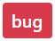
{kind=link}
GitHub issues only have 2 states: open, closed. So labels are defined to assist SOF bug tracking.
Life Cycle of a Bug#
The life cycle of a bug is also the workflow for bugs. Here is a graphic representation of this life cycle.
{kind=link}
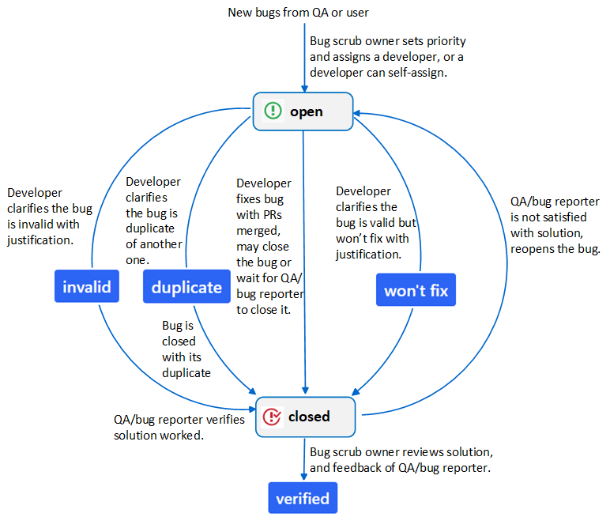
Labels#
Please find the labels from thesofproject/sof.
Solution, priority and platform labels are common for SOF firmware, linux kernel driver and tool repositories.
Branch labels are repository-specific.
Solution Labels#
Usually a developer will fix a bug by submitting pull requests. This is the default solution and so doesn’t any solution label.
Otherwise, developers need to add a label ,
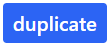 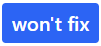
{kind=link}
{kind=link}
{kind=link}
Label 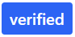
{kind=link}
Priority Labels#
Bug scrub owner should use them to set priority to a bug according to its impact.
{kind=link}
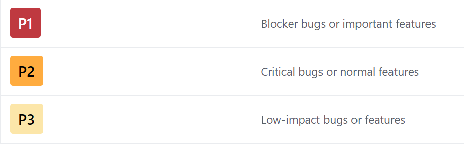
Plaform and Branch Labels#
Used by QA and bug reporter.
Platform labels are used to specify a platform or multiple platforms on
which a bug is observed, e.g. 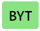 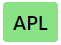 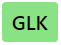
{kind=link}
{kind=link}
{kind=link}
Branch labels are used specify a branch or multiple branches on which
a bug is observed, e.g. 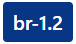
{kind=link}
{kind=link}
{kind=link}
Note
Platform labels should always be applied.
Branch labels are usually only applied when the branch is not the default branch for developing/release on the platform.
QA should update (add/remove) platform and branch labels according to texample-trace-point.pnghe latest bug status.
Other optional Labels#
Two optional labels can be used to call for attention.
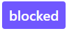
- Blocked by some dependency, whichh applies to either feature implementation or bug reproduction.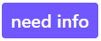
- Further information is requested.
{kind=link}
{kind=link}
How to Report a Bug#
Please create a issue and apply label .
And please provide the following information:
- Title
The title should be a clear and concise summary of the bug.
The title must be unique and descriptive. Bad examples are “ipc timeout” and “topology failed to load”. Ideally the title should contain keywords from the kernel, firmware, or user space error message.
The title should also contain a prefix indicating the area of failure e.g. “ipc:”, “topology:”, “pipeline:”
- Environment
Branch name and commit hash of 3 repositories: sof (firmware), linux (kernel driver) and soft (tools & topology).
Name of the topology file
Name of the platform(s) on which the bug is observed.
Reproducibility Rate. If you can only reproduce it randomly, it’s useful to report how many times the bug has been reproduced vs. the number of attempts it’s taken to reproduce the bug.
- Steps to reproduce
The steps must be precise. And please help to narrow down the steps.
Please number the steps from beginning to end so developers can easily follow through by repeating the same process
- Expected Result
Describe what the user should expect.
- Actual Result
In contrast to the expected behavior, describe what currently happens.
- Proof
Please paste the relevant dmesg and firmware logger data to the comment box. The pasted data should contain the actual crash or error but also the conditions prior to the bug, i.e. also copy the 10 lines before the crash.
For firmare boot failure, the pasted dmesg must include the trace point which indicates the progress of firmware boot process:
Entire kernel message and firmware logger text should also be attached for reference.
If you cannot hear sound for playback or capture, please attach your amixer settings. If there is a mixer setting seems wrong, please paste the relevant amixer item in the comment box.
For audio quality issues (eg. noise, glitch sound and distortion etc), it’s helpful to
play/capture a sine wave, attach the captured wave file with quality issue.
note: You can use Audacity to generate a sine wave. Here is the screenshot of a sine wave:
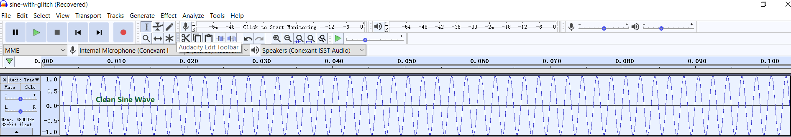
share the parameters of the sine wave: frequency, sample rate, format and number of channels.
share the waveform screenshot where the glitch/distortion happens shown by Audacity (> 10ms).
Here is an example of a sine wave with glitch sound:
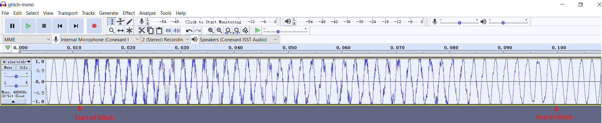
Please also zoom in to show the start of the glitch sound,
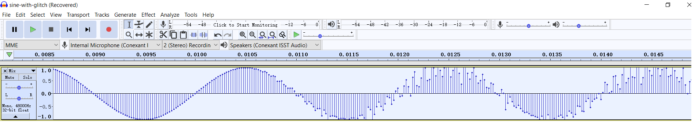
and the end of the glitch.
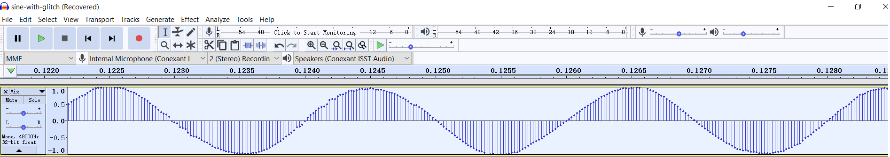
{kind=link}
{kind=link}
{kind=link}
{kind=link}
{kind=link}
Note
If you have multiple issues, please file them separately so they can be tracked more easily.
Please use markdown for formatting example commands, code, diffs, patches etc.
How to Close a Bug#
For bugs fixed by pull requests
Developers can use keywords to close one or multiple bugs via pull requests automatically.
Developers can also leave the bug open, and QA should close the bug if it cannot be reproduced after verification.
For bugs with label or , develpers should close them with justification.
For bugs with label , please keep the bug open until its duplicate is resolved and closed.
Note
After the pull request(s) is merged, developer should always @ bug reporter and @ QA engineer who tracks this bug to verify the solution.
Usually the right QA engineer is the bug reporter or who updates the bug status in the comment box. If you don’t know who is the QA engineer, please @ bug scrub owner.